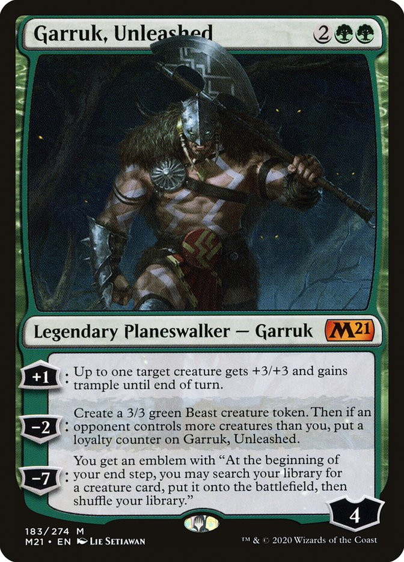
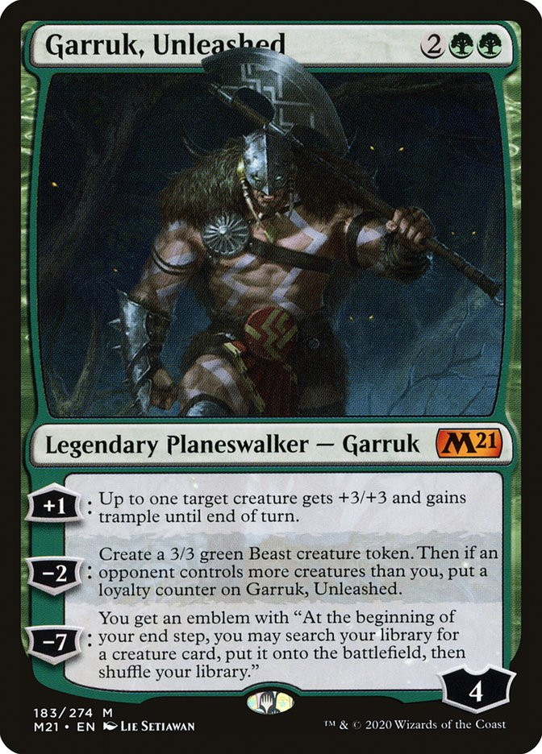

No magic the gathering ha 5 cores principais, Branco, Azul, Preto, Vermelha e Verde.
cada cor tem um significado para elas e e elas tem seus pontos fortes como por exemplo
o preto usa bem o cemiterio e remoções
Bem como significados temos as cores:
Cor Branca: Paz, lei, estrutura, abnegação, igualdade
Cor Azul: Conhecimento, engano, cautela, deliberação, perfeição
Cor Preta: Poder, interesse próprio, morte, sacrifício, desinibição
Cor Vermelha: Liberdade, emoção, ação, impulso, destruição
Cor Verde: Natureza, vida selvagem, conexão, espiritualidade, tradição
Como dito antes cada cor e boa em algo especifico como por exemplo a cor Branca
e boa em dar beneficios as suas cartas (Buffs) e exilar outras cartas.
a cor Azul e forte em negar magicas dos oponentes e ela e forte em comprar cartas
a cor preta trabalha muito com descarte de mão dos oponentes e remoções
a cor vermelha e muito forte em ser agreciva com muitas criaturas atacando assim
que entram em jogo e tambem e forte com efeitos burn (danos de efeitos diretos).
e por ultimo a cor verde que tem como forte destruição de arteffatos e encantamentos alem
de ter as maiores criaturas e termos de força e resistencia.

 

multicores
Entrando mais a funto sobre as cores tambem ha as cartas incolores que em sua maioria são arteffatos
e ha as cartas multicores, ha uma coleção que enfatizo as cartas de duas cores com suas guildase
assim nomeando as combinações.
- Branco / Azul = Azorius ou UW
- Azul / Preto = Dimir ou UB
- Vermelho / Preto = Rakdos ou BR
- Verde / Branco = Selesnya ou GW
- Vermleho / verde = Grull ou RG
- Branco / Preto = Orzhov ou BW
- Azul / Vermelho = Izzet ou UR
- Verde / Preto = Golgari ou BG
- Vermelho / Branco = Boros ou RW
- Verde / Azul = Simic ou UG